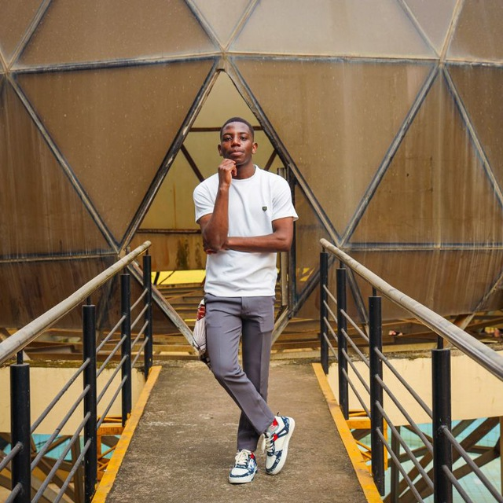

Creator & Media
YouTube strategy, content development, visual storytelling, music/media projects and digital publishing.
CREATOR • ENTREPRENEUR • STRATEGIST
I’m Lyton Mupanga — a multidisciplinary creator, entrepreneur, academic tutor, public speaker and media strategist building a portfolio of ventures across education, creativity, media and personal development.
THE PERSON BEHIND THE PROJECTS
Lyton Mupanga is building a connected ecosystem rather than a collection of disconnected projects. The mission is simple: learn deeply, create boldly, communicate clearly and build things that remain useful.
Read the full story →WHAT I DO
Different disciplines, one operating system: curiosity, execution and long-term value.
YouTube strategy, content development, visual storytelling, music/media projects and digital publishing.
Building brands, products, creative ventures and systems designed to turn ideas into sustainable value.
Academic tutoring, learning resources, research thinking and communication built around practical understanding.
Speaking, mentoring and conversations around discipline, self-mastery, failure, ambition and growth.
THE ECOSYSTEM
FROM THE JOURNAL
The journal is where the experiments, lessons, frameworks and reflections behind the work become useful to other people.
Read the journalA reflection on setbacks, identity and the difference between a difficult chapter and a finished story.
Read article →VISUAL ARCHIVE

LET'S BUILD SOMETHING USEFUL
For speaking, creative work, strategy, media projects or partnerships, start a conversation.
Start a conversation